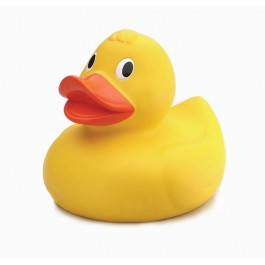

<script src="/chandler/website/jquery-1.9.1.min.js"></script>
<script src="/chandler/experiments/howler.js"></script>


<button id="q"></button>


<script>
var sound = new Howl({
  urls: ['/chandler/experiments/quack.wav']
}).play();

$("#q").click(function(){sound.stop().play();});

</script>
